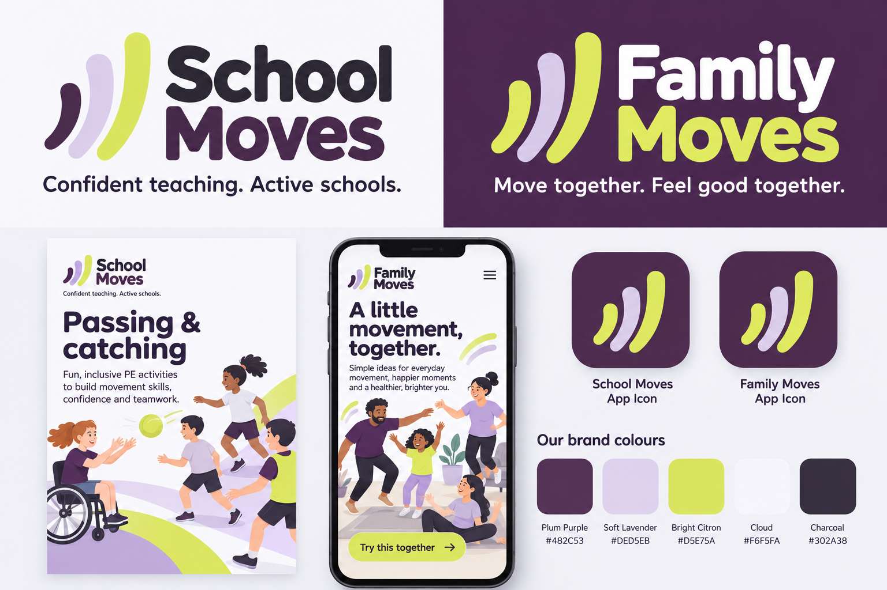
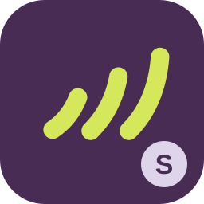
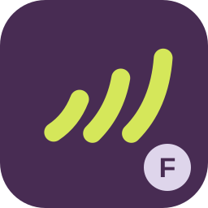

Brand starter kit / 3 October 2026
School Moves.
Family Moves.
One movement identity.
Two connected brands for practical PE and everyday family wellbeing. Plum purple, lavender and bright citron bring a shared energy to school and home.
Visual direction

Editable starter logos
The SVG masters below are reusable editable interpretations of the direction. Their live system-font lettering and mark geometry differ slightly from the raster concept.


Palette
Purple
#482C53
#482C53
Lavender
#DED5EB
#DED5EB
Citron
#D5E75A
#D5E75A
Cloud
#F6F5FA
#F6F5FA
Charcoal
#302A38
#302A38
Distinguishable app icons


Use School Moves for teacher resources and PE support. Use Family Moves for household activities. Shared symbol and colours keep the relationship clear; full names and S/F badges distinguish the audiences.
Initial design proposals. Names have not been checked for availability. No font files included. See the guidelines before final production export.